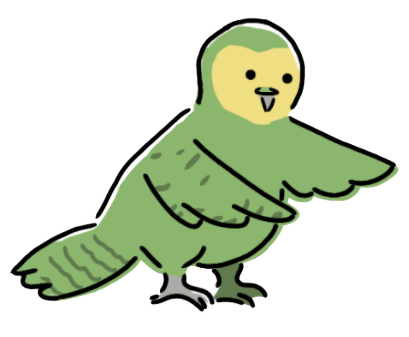

{kind=link}
Return to top

| Common name | Parrots |
|---|---|
| Order | Psittaciformes |
| Number of Species | about 350 |
| Lifespan | an average of 20 to 50 years (varies for each species) |
| Diet | omnivore; nuts, seeds, flowers, leaves, insects |
| Habitats | in warm climates all over the world; Australia, Central America, South America, Asia |
The parrots are a very large group of birds. Composed of more than 300 species, Parrots are known to be beautiful with very bright and vibrant feathers of many different colours. A common trait is their feet; they have two toes in the front and two in the back. They work like a pair of hands, optimising their body for climbing trees and holding onto their food while eating. Their strong beaks crush nuts and scoop up the vegetation they feed on. Parrots, being so varied, come in many sizes. Macaws are the group largest in size and length, the longest one being a metre. Parrotlets are the smallest, only reaching about the length of an average person’s hand.
Parrots typically live in tropical areas, in rainforests and jungles. They make their nests in hollow trunks in trees, with the basic nest making materials like sticks, twigs, and grass.
Parrots have an iconic habit of mimicking sounds. It is especially noticeable in pet parrots who “speak” back to their owners or copy the phrases it hears often. Although it is not scientifically proven, these birds have seemed to display emotions, which isn’t much of a surprise considering their level of intelligence. Some may preen each other’s feathers to show affection, or even share food, somewhat like humans. Anger is another emotion quote visible in birds. They might make various sounds with their beaks and change their posture. The cockatoo for example fluffs up their feathers and crest and squawks loudly to show that it’s upset. On the opposite end, they might start singing when they’re happy.
Parrots are very common pets among birds. Their intelligence and mimicking habits have appealed to many people who now see them as household companions. Some popular species to keep as pets are parakeets, conures, and cockatiels. Because of this demand for them as pets, wild parrots are illegally caught for trade. They are often ripped away from their needs as a parrot and mistreated by people who have no regard for their proper care. Repeated mistreatment of these birds have left a large portion of them endangered.
Parrots don’t have many natural predators. They might get attacked and eaten by larger birds of prey or have their eggs stolen by monkeys and weasels. Almost all parrots are nonmigratory birds. The very few that do migrate are the Orange-bellied parrot and the Swift parrot of Australia. These birds have become critically endangered from human causes. Their natural habitats were cleared for more agricultural land so apart from migrating, nesting also becomes a challenge.
★ Read about a peculiar and edangered species of parrot, the kākāpō
Return to top